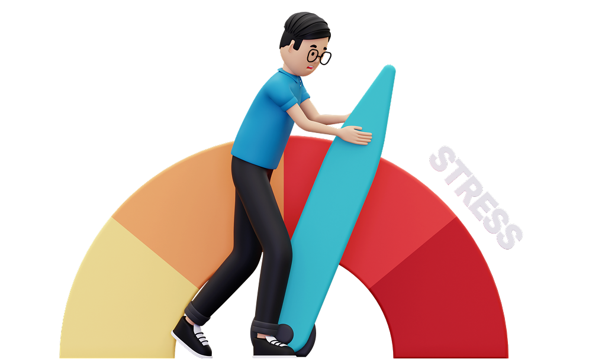
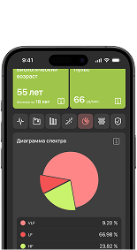

Стресс
Один из 4 ключевых столпов здоровья — питание, движение, сон, стресс.
Хронический стресс
увеличивает риск заболеваний в 2–5 раз. Без диагностики врач работает вслепую.
Влияет на гормональный баланс, уровень системного воспаления, адаптационные резервы.
Может искажать результаты лечения – без его учета терапия может быть неэффективной.
Спектральный анализ ВСР
– золотой стандарт оценки стресса в функциональной медицине

Вы не можете управлять тем, что не измеряете
Анализ вариабельности сердечного ритма (ВСР) – самый точный метод диагностики уровня стресса.
Стресс-трекер
инструмент для оценки и управления стрессом
Научно-обоснованный анализ ВСР
Оценка адаптивных резервов организма и уровня стресса
Визуализация динамики "до" и "после" терапии
Диагностика блуждаю его нерва – ключевого регулятора стресса
Определение противопоказаний к нагрузочным процедурам
Дистанционный мониторинг пациентов
Кейсы применения ВСР-анализа в практике специалистов
Метод анализа ВСР был разработан в космической и военной медицине, а теперь стал доступен для специалистов превентивной медицины
Технология анализа
Самый точный метод оценки стресса и регуляторных резервов
Оценка автономной нервной системы и тонуса блуждающего нерва.

Мгновенный спектральный анализ ВСР – отображение баланса симпатики и парасимпатики.
ВСР является маркером готовности организма к нагрузке и предиктором заболеваний.
Метод основан на аналитике R-R интервалов ЭКГ. Данные проходят сравнение с базой более
10 000 измерений.
Почему ВСР точнее других методов?
Кортизол-тест показывает лишь последствия стресса, но не его динамику.
Носимые устройства имеют высокую погрешность измерений.